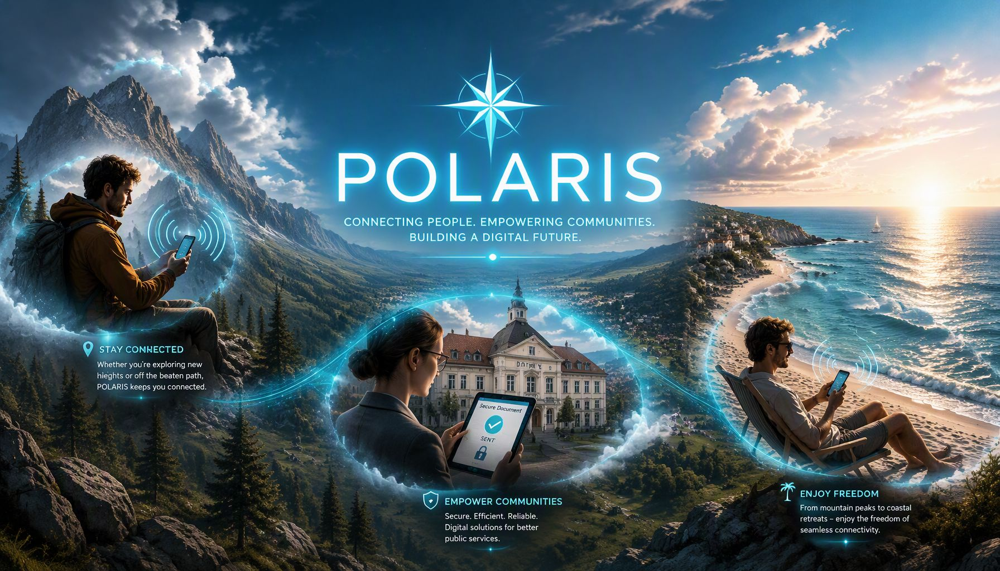
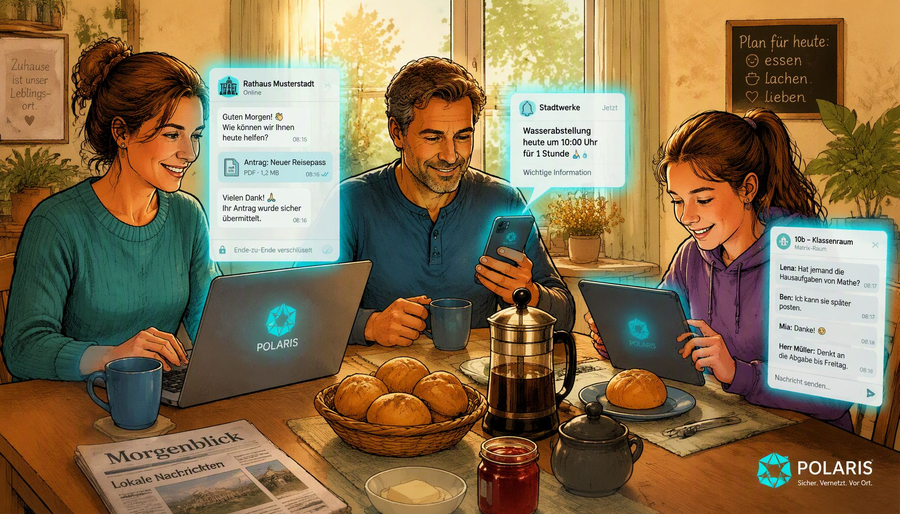

POLARIS

POLARIS ist ein architektonisches Konzept für ein dezentrales, digital souveränes Bürgernetzwerk, das Kommunen und ihre Einwohner unabhängig von globalen IT-Monopolen macht.
Schluss mit dem Zwang zu unzähligen, komplizierten Apps für jede Stadt und Gemeinde. Sie nutzen für den Kontakt mit Ihrer Stadt genau denselben, sicheren und kostenlosen Messenger, mit dem Sie auch Ihren Freunden schreiben. In diesem Messenger haben Sie genau ein Chatfenster mit dem Rathaus – hier schicken Sie Ihre Anträge ab und werden im Hintergrund automatisch immer an den richtigen Sachbearbeiter vermittelt.
Das Besondere: Wenn Sie es möchten, blendet der Messenger Ihnen unterwegs vollautomatisch lokale Informationen ein. Egal ob es die Blitzeis-Warnung auf der Straße, der Schulausfall der Kinder oder eine dringende Evakuierungsroute bei einem Waldbrand im Urlaub ist – relevante Warnungen ploppen genau dann auf Ihrem Handy auf, wenn Sie das betroffene Gebiet betreten. Sobald Sie weiterreisen, verschwindet der Info-Kanal wieder spurlos von Ihrem Smartphone. Das System arbeitet dabei so diskret, dass zu keinem Zeitpunkt ein Bewegungsprofil von Ihnen erstellt werden kann.
POLARIS im Alltag

Zuhause 🏡 Der direkte Draht
Sie sitzen morgens am Küchentisch und trinken Kaffee. Ihnen fällt ein, dass Sie für den nächsten Monat dringend einen neuen Reisepass beantragen müssen.
• So hilft POLARIS: Sie öffnen einfach Element X auf ihrem Desktop oder Smartphone. Kein langes Suchen nach Telefonnummern, kein Warten in der Schleife. Über den verifizierten Kanal des Bürgerbüros schreiben Sie direkt: „Guten Morgen, ich benötige einen Termin für einen Reisepass.“ Ein automatischer Assistent oder ein Mitarbeiter im Rathaus antwortet Ihnen direkt im sicheren Chat und schickt Ihnen einen Termin.
• Der Mehrwert vor Ort: Gleichzeitig erhalten Sie im lokalen Kanal der Stadt die Meldung, dass wegen dringender Wartungsarbeiten das Wasser in Ihrer Straße am Donnerstagvormittag kurzzeitig abgestellt wird. Sie sind informiert, bevor das Problem entsteht – datenschutzkonform und ohne, dass Ihre Daten an Werbekonzerne fließen.
Im Auto 🚗 Sicherheit in Echtzeit
Sie fahren am Wochenende auf der Harzhochstraße. Das Wetter im Oberharz schlägt plötzlich um – dichter Nebel und plötzliches Glatteis setzen ein.
• So hilft POLARIS: Ihr Smartphone erkennt im Hintergrund, dass Sie sich auf einer bestimmten Strecke befinden. Die App schaltet automatisch und lautlos den offiziellen Verkehrswarnkanal der Region frei.
• Der Mehrwert unterwegs: Bevor Sie in die Gefahrenzone einfahren, erhalten Sie eine prägnante Push-Nachricht: „Achtung: Blitzeis auf der B242 zwischen Dammhaus und Sonnenberg. Bitte Fahrweise anpassen.“ Sobald Sie die Gefahrenzone oder den Landkreis wieder verlassen, blendet die App diesen Kanal im Hintergrund automatisch wieder aus, um Ihr Smartphone übersichtlich zu halten. Sie sind geschützt, genau dann, wenn es darauf ankommt.
Beim Wandern 🌲 Sicherheit im tiefen Wald
Sie machen am Wochenende einen Familienausflug. Zusammen wandern Sie durch das dichte Unterholz eines weitläufigen Nationalparks – weit weg von Hauptstraßen und Sirenen. Was Sie nicht wissen: Ein paar Kilometer weiter ist ein unbemerktes Feuernest ausgebrochen, der Wind dreht und die Situation könnte bald brenzlig werden.
So hilft POLARIS: Da sich Ihr Smartphone im Hintergrund vollautomatisch in die digitale Frequenz der lokalen Forst- und Rettungsbehörden eingeklinkt hat, müssen Sie nicht aktiv nach Nachrichten suchen. Das Geo-Fencing Gateway erkennt anonym, dass sich Ihre Wanderroute mit der potenziellen Gefahrenzone des Waldbrandes überschneidet.
Der Mehrwert vor Ort: Ihr Handy schlägt plötzlich Alarm. Sie erhalten eine unmissverständliche Push-Nachricht mit einer präzisen Handlungsempfehlung der Nationalparkverwaltung: „Achtung: Unkontrollierter Waldbrand im Sektor West. Bitte verlassen Sie das Waldgebiet umgehend in Richtung Osten über den Rettungsweg Silberbach.“ Dank der frühzeitigen Warnung drehen Sie rechtzeitig um und bringen Ihre Familie sicher aus dem Wald.
Im Urlaub 🏖️ Immer Up To Date
Sie machen Sommerurlaub an der Nordsee oder in einer anderen „Digital Souveränen Region“, die im POLARIS Verbund ist.
• So hilft POLARIS: Sie müssen keine neue, komplizierte Tourismus- oder Warn-App für Ihren Urlaubsort herunterladen. Da das Matrix-Netzwerk im Hintergrund deutschlandweit föderiert (vernetzt) ist, bleibt Ihre App dieselbe.
• Der Mehrwert vor Ort: Sobald Sie in Ihrem Urlaubsort ankommen, merkt Ihre App: „Wir sind jetzt in Gemeinde X“. Sofort haben Sie Zugriff auf den dortigen Bürger- und Touristenkanal. Sie erhalten sofort die wichtigsten lokalen Infos auf Ihr Handy:
• Wo gibt es heute frischen Fisch?
• Welche Strandabschnitte sind überfüllt?
• Gibt es eine Unwetterwarnung für die Küste?
Wenn Sie nach zwei Wochen wieder nach Hause in den Oberharz fahren, meldet sich die App automatisch aus den Urlaubskanälen ab – ganz von allein, sauber und unkompliziert.
💡 Die Vision
💡 Die Vision
Der erste Schritt: Das digital souveräne Rathaus
Die Digitalisierung unserer Städte darf nicht länger in einer Sackgasse aus teuren Software-Abonnements und fremden Systemen enden. Der erste, notwendige Schritt ist ein Rathaus, das digital wieder auf eigenen Beinen steht. Indem Städte auf freie, staatlich geförderte Software-Bausteine setzen, schaffen sie das unumgängliche Fundament, um sich aus den Fesseln globaler IT-Monopole zu befreien.
Ein modernes behördliches Informationsmanagement
Auf diesem sicheren Fundament bleiben die eigentlichen Aufgaben der Sachbearbeiter vollkommen unverändert – das Rathaus gewinnt jedoch ein modernes behördliches Informationsmanagement. Anstatt wichtige Ankündigungen mühsam in dutzenden einzelnen Apps, Webseiten und Social-Media-Kanälen parallel einzupflegen, orchestrieren die Verwaltungen ihre Mitteilungen an die Bürger künftig zentral über genau ein System. Das spart im Arbeitsalltag massiv Zeit, verhindert Überforderung und sorgt dafür, dass jede Nachricht garantiert genau dort ankommt, wo sie gebraucht wird.
Ein sicheres Netz für die gesamte Gesellschaft
Damit dieses System stabil und unabhängig läuft, verlegen wir die digitale Infrastruktur dorthin, wo die größte technische Kompetenz des Landes sitzt: in die Rechenzentren unserer Universitäten. Durch diese enge Kooperation schaffen wir ein bundesweites, öffentliches Netzwerk für das Gemeinwohl. So bleibt das hochgesicherte Kernnetz des Rathauses eine unantastbare Festung, während die digitale Souveränität direkt in unsere gesamte Gesellschaft getragen wird – für den Staat und seine Bürger gleichermaßen.
Das enorme Potenzial im Alltag
Das wahre Potenzial von POLARIS entfaltet sich genau dort, wo diese dezentrale Technik auf das echte Leben trifft: in unseren Alltagsszenarien. Das System arbeitet vollkommen automatisch im Hintergrund und verbindet sich im Prinzip mit digitalen Landkarten, die bereits existieren. Dadurch entsteht ohne jeglichen bürokratischen Mehraufwand für die Verwaltung eine krisenfeste, mitdenkende digitale Heimat, die hochsichere staatliche Infrastruktur mit einer kinderleichten Anwendung für den Bürger verschmilzt.
Drei Säulen für die gesellschaftliche Praxis:
Souveräner Zugang ohne App-Wildwuchs: Kein Zwang zu fehleranfälligen Spezial-Apps der Kommunen oder komplizierten Handy-Scans im Alltag. Der Bürger nutzt einen ganz normalen, standardisierten Messenger. Die Verwaltung bleibt nah am Menschen, digital gestützt und unkompliziert.
Radikale Kostensenkung: Durch die konsequente Nachnutzung freier, staatlicher Bausteine und die gezielte Nutzung von bis zu 90 % Landesförderung sparen Kommunen immense Summen an jährlichen Lizenzgebühren.
Föderierter Katastrophenschutz: POLARIS verbindet die Informationskanäle der Behörden direkt mit ziviler Sicherheit. Lokale Warnungen erreichen Bürger mobil, anonym und völlig unabhängig von den fehleranfälligen Push-Infrastrukturen amerikanischer Tech-Konzerne – blitzschnell und datenschutzkonform.
🏛️ Der Bürgerraum
Ein zentraler Baustein des POLARIS-Ökosystems ist der auf Matrix-Neo basierende „Bürgerraum“ (dort Postfach genannt), das eine datenschutzkonforme, plattformunabhängige und intuitive Kommunikation zwischen Bürgern und Verwaltung ermöglicht.
🛠️ Geo-Fencing Gateway
Das Matrix-POLARIS-Gateway ist das innovative Herzstück des Projekts. Es fungiert wie eine digitale „Radio-Station“ für Regionen: Wenn Bürger oder Pendler eine Regionsgrenze passieren, klinkt sich ihr System im Hintergrund vollautomatisch und geräuschlos in die lokale „Frequenz“ ein, um ortsbezogene Info-Services, Bürger-Kanäle und Alarmsysteme direkt nutzbar zu machen.

📂 Dokumente, Analysen & Quellcode
POLARIS ist vollständig transparent und gemeinfrei. Unter der Schirmherrschaft von eZiner stehen alle Konzepte und technischen Komponenten im Sinne der öffentlichen Daseinsvorsorge frei zur Nachnutzung bereit.
📄 Konzept & Whitepapers
Enthält die vollständige theoretische Dokumentation, die empirische Analyse kommunaler IT-Haushalte sowie politische Beschlussvorlagen für den Stadtrat.
🛠️ Das Geo-Fencing Gateway
Ermöglicht es Servern, mobile Bürger und Autofahrer via Live-Standort (Beacons) vollautomatisch und datenschutzkonform in regionale Chat-Zellen hinein- und herauszuführen.